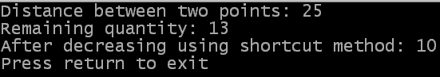

Es ist möglich, den Subtraktions-Operator auf normale Art und Weise, bei der das Ergebnis der Subtraktion mit einem anderen Operator oder als Parameter eines Befehls benutzt wird, oder in der auf der vorherigen Seite gezeigten abgekürzten Form zu verwenden. Dieselben Einschränkungen wie beim Additions-Operator treffen hier zu: das Ergebnis der Berechnung darf nicht verwendet werden und das am weitesten links befindliche Element muss eine Variable sein (so dass sie vermindert werden kann).
Dieses Beispiel demonstriert einige der Anwendungen des Subtraktions-Operators. Den Quellcode erhalten Sie hier.
OpenConsole()
; Part 1 - Simple example of using the subtraction operator
x2 = 50
x1 = 25
distance = x2 - x1
PrintN("Distance between two points: " + Str(distance))
; Part 2 - Multiple operators can be used in the same calculation
total = 100
half = 50
quarter = 25
tenth = 10
leftovers = total - half - quarter - tenth - 2
PrintN("Remaining quantity: " + Str(leftovers))
; Part 3 - Shortcut version of the subtraction operator
leftovers - 3
PrintN("After decreasing using shortcut method: " + Str(leftovers))
PrintN("Press return to exit")
Input()
CloseConsole()
End
 Dieses Bild zeigt die Ausgabe des Beispielprogramms.
| Vorheriges Thema | Kapitel-Inhalt | Nächstes Thema |
|---|---|---|
| Addition | Benutzerhandbuch Inhalt | Multiplikation und Division |